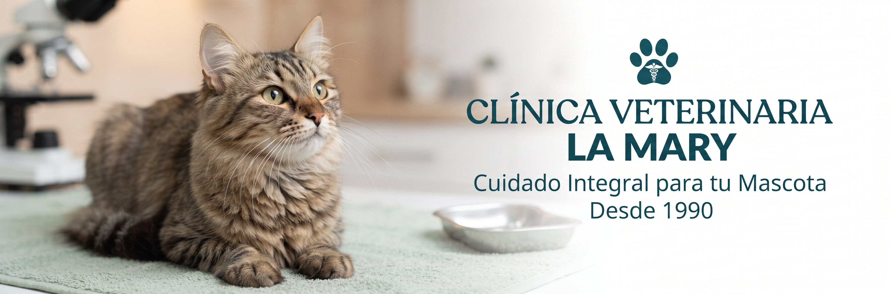

Consultas
Consultas médicas veterinarias
Consentidos, sanos y felices
Porque cada momento cuenta: atención profesional, internación segura y el confort de la consulta domiciliaria.
Solicitar turno
Consultas médicas veterinarias
Vacunaciones para perros y gatos
Cirugías veterinarias programadas y de emergencia
| Lunes a Viernes | 7:00 a 13:00 | 17:00 a 21:00 |
| Sábados | 8:00 a 14:00 | 17:00 a 20:00 |
| Domingos y Feriados | 9:30 a 12:30 |